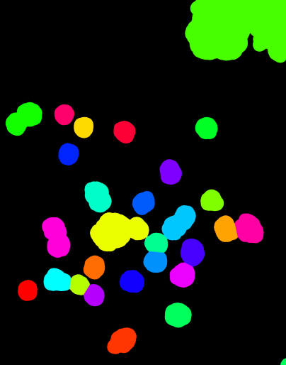

All Process Menu Options
The Process Menu offers options for calculating networks and altering image contents.
The first submenu is the calculate menu, which has functions for calculating the networks and their properties.
‘Process -> Calculate Network -> Calculate Connectivity Network…’
This method is used to connect objects in the nodes channel via objects in the edges channel.
Please see Quickstart - Segmenting Data and Generating Connectivity Networks for a detailed walkthrough about using this function.
The vast majority of its parameters are optional, however a few of them are advised to be considered for use with each execution of this method.
Selecting this function will show the following menu:
{kind=link}
Parameter Explanations
- Output Directory
If a string path is included to a directory, the resulting Network3D Object will be saved there as it’s calculated. If nothing is included, this will save nothing by default, and the user will need to save in post with ‘File -> Save (As)’
- xy_scale
Enter a float value here if you want your X/Y 2D plane pixel-scaling to correspond to some real world value. (ie, 5 microns per pixel). It is presumed to be 1 by default.
- z_scale
Enter a float value here if you want your Z 3D voxel depth to correspond to some real world value. (ie, 5 microns per voxel). It is presumed to be 1 by default.
- Node Search (float)
This value is the distance nodes will search the corresponding edge image for connections to other nodes. Note that this value is scaled corresponding to the xy_scale/z_scale parameters. (As in, if you set xy_scale/z_scale correctly, then treat this as a real-value, such as microns, for your image).
Note this value is 0 by default, which will only connect nodes that edges literally pass through.
- Edge Reconnection Distance (float)
This value is the distance edges will dilate (‘get inflated’). Note that this value is scaled corresponding to the xy_scale/z_scale parameters. (As in, if you set xy_scale/z_scale correctly, then treat this as a real-value, such as microns, for your image).
The point of this parameter is if your segmented edges are not continious structures, due to having holes from imaging/segmenting artifacts. Edges that are totally discrete in 3D space (ie, not touching), as one might expect, will not join together nodes through that pathway. Blowing them up will fill those holes.
Keep in mind that all edges get blown up - so if I have two edges that are ten microns apart, entering a value of 5 (microns) here will cause them to merge.
This method does NOT erode. It only dilates! This also enables edges to search a bit further than the Node Search parameter suggests, because they can then enter a node’s search space!
Furthermore, there is an inherent trade off in using dilation to fill hole artifacts, since they also risk merging nearby edges that shouldn’t be merged. Use at your own risk!
(FYI if there are holes I do like to use this param a little bit, however a more elegant solution is to independently dilate, then erode the edges before starting this method). It’s difficult to create a totally smooth segmentation throughout small, filamentous objects
Note this value is 0 by default, and shouldn’t be anything if your edges don’t have hole artifacts, or those were already corrected (via dilating them yourself, with optional erosion).
- Downsample for Centroids (int)
Temporarily downsamples the image on the step to calculate centroids to speed that up (it can be somewhat slow on overly large images). The downsample will be performed in all three dimensions corresponding to the factor entered here.
Note that centroids calculated on downsampled images have to be approximated to the upsampled version, so they may not correspond perfectly, although they will generally be close enough.
- Warning: for any downsample on an image containing small nodes, if those nodes’ smallest dimension is smaller than this down factor, they run the risk of being kicked out of the downsampled image, which means their centroid will not be found.
Please use downsampling that corresponds to your node sizes.
(For larger images, I would generally set this param to something assuming your nodes are big enough.)
- Downsample for Distance Transform (GPU) (int):
Currently this param only applies if both fast dilation and GPU is enabled. (Non fast-dilation allows calculates a full distance transform).
This param temporarily downsamples the image in all three dimensions by the downsample factor while calculating the distance transform on GPU.
- Warning: for any downsample on an image containing small nodes, if those nodes’ smallest dimension is smaller than this down factor, they run the risk of being kicked out of the downsampled image, which means they will not be considered for network connections.
Please use downsampling that corresponds to your node sizes.
- Filepath or directory containing additional node images.
If a string filepath is inputted here, NetTracer3D will look in that directory. It will attempt to merge any .tif files in that directory with the current node channel before calculating the network, assigning them identities based on their image of origin.
See ‘File-> Load -> Load Misc Properties -> Merge Nodes’ for more information.
- Times to remove Edge Trunks (int):
Has NetTracer3D remove the ‘edge trunk’ prior to network calculation. It will do this a number of times equal to the integer inputted here. So a value of 1 will remove the fattest trunk, then 2 will also remove the second fattest, etc.
Note: This occurs after NetTracer3D has discretized (split up) the edges. It functions similarly but NOT the same as removing the trunk from the network in-post. It will instead remove the highest-volume (literally, the largest) edge.
Meanwhile, removing the trunk from the network in post takes out the most interconnected edge. Many times this will have the same result, but not always. Just make sure you are using the version of trunk removal that you want.
- Use GPU:
Has NetTracer3D attempt to use the GPU for the distance transform step.
If fast dilation is enabled and your system runs out of VRAM doing the distance transform, this algorithm is set up to iteratively retry the operation with successive downsamples, until it finds one that fits in your GPU. This downsample is only temporary - NetTracer3D is attempting to find seed kernels to reassign labels in a full-sized binary dilation.
Note that this of course runs the risk of removing nodes from your array, as described in parameter 7 (Use parameter 7 for more direct control over this behavior).
If the distance transform fails for any othe reason on GPU, it will by default be computed on CPU instead. The CPU version will never attempt to downsample.
Note that the above only applies to fast dilation. Not using fast dilation will just attempt to use the GPU for the distance transform once, then move on the CPU if memory runs out.
- Re-Label Nodes…:
Makes NetTracer3D label objects in the nodes channel with a simple adjacency-labeling scheme (ie, all discrete objects in space aquire a unique number).
DISABLE this option if your nodes were already labeled elsewhere.
- Use Inner Edges:
If enabled, edges that connect nodes that exist soley within said nodes’ search regions will be used to make connections.
Note that there is not really a great reason to disable this, but it could be because you only want more distant connections to be considered.
- Use Fast Dilation:
If enabled, dilation will be predicted using pseudo-3D binary kernels.
When disabled, dilation will be done using a perfect distance transform.
For more information on this algorithm, see ‘Process -> Image -> Dilate’.
- Generate Overlays:
If enabled, NetTracer3D will execute ‘Image -> Overlay -> Create Network Overlay’ and ‘Image -> Overlay -> Create ID Overlay’ (which will override Overay 1 and 2, respectively).
- Update Node/Edge in NetTracer3D:
While calculating the edges and nodes, NetTracer3D will transform them somewhat based on these params and to discretize (split up) the edges.
When enabled, those new versions will replace what is currently in the nodes/edges channels.
For the edges particularly, this may have them be reloaded with a version that looks a bit chopped up and altered, albiet mostly the same.
Generally it is recommended to enable this, because it will ensure the data in the images matches the network, which will be required for several NetTracer3D functions, although be sure to save your inputs first.
Algorithm Explanations
The basic premise of this algorithm is demonstrated by this diagram:

Nodes are expanded based on their search distance. This expansion is accomplished through the use of a distance transform that assigns outer ‘shell’ regions a label corresponding to the internal labeled node they are closest to.
The search region is used to split the edges up. Edges outside the search region become ‘outer edges’, while those inside the search region become ‘inner edges’. The edge pieces aquire unique labels, conveying their identity.
(If not using param 5), outer edges are still dilated a single time to force them to once more overlap the search region by a single voxel. The search region for every node can then be evaluated for what ‘outer edge’ it interacts with.
Since inner edges potentially course through many search regions, an additional step is required to find their node-to-node connections. The border of the search region is acquired via the skimage find_boundaries method. These node borders can be extracted and used to isolate the ‘inner edge pieces’ that exist inside of them, which all aquire unique label IDs. We can dilate those inner edge pieces once to evaluate which nodes touch them.
The group of edges that each node interacts with can then be sorted through. Any nodes that interact with the same edge are connected.
Finally, the connections are used to create a NetworkX graph object which can be used for network analysis.
Press ‘Run Calculate All’ to run the method with the desired parameters. The output data populate their respective areas, ie the four channels for images that are loaded, or the right table widgets for any spreadsheet-style properties.
‘Process -> Calculate Network -> Calculate Proximity Network…’
This method is used to connect objects in the nodes channel based on whether they are within some user-defined distance of each other.
Please see Proximity Networks - Ideal for Cellular Data for a brief walkthrough about using this function.
Selecting this function will show the following menu:
{kind=link}
Parameter Explanations
- Search Region Distance…
This value is the distance nodes will search for other nodes to connect to. Note that this value is scaled corresponding to the xy_scale/z_scale parameters. (As in, if you set xy_scale/z_scale correctly, then treat this as a real-value, such as microns, for your image).
- xy_scale
Enter a float value here if you want your X/Y 2D plane pixel-scaling to correspond to some real world value. (ie, 5 microns per pixel). It is presumed to be 1 by default.
- z_scale
Enter a float value here if you want your Z 3D voxel depth to correspond to some real world value. (ie, 5 microns per voxel). It is presumed to be 1 by default.
- Execution Mode:
- The dropdown menu will display two options.
‘From Centroids…’ - The search is done starting from centroids, looking for other centroids. The algorithm that this uses should be faster for larger datasets. It is ideal to use when your nodes can be represented well by centroids, such as if they are small or relatively homogenous spheroids. Note that because centroids are used, this option allows this function to run without any nodes image whatsoever, assuming the node_centroids property was loaded in. This might be useful when importing data that has already been extracted out of an image elsewhere, as a set of centroids, for example.
‘From Morphological Shape…’ - The search is done starting from each nodes’ border in 3D space. This algorithm is slower but is better suited handling non-homogenous or oddly-shaped nodes.
- Create Networks only from a specific Node Identity?
This option will only appear if something is assigned to the node_identities property.
If so, there will be a dropdown menu to select one of your defined node-identities subtypes.
(If not ‘None): Whichever node identity subtype is selected - only those nodes will be used to make network connections (however, they will be able to connect to any other node type).
Use this to simplify network structures when you are only interested in one node subtypes’ relationship to the rest of the nodes.
- Output Directory
If a string path is included to a directory, the resulting Network3D Object will be saved there as it’s calculated. If nothing is included, this will save nothing by default, and the user will need to save in post with ‘File -> Save (As)’
- Generate Overlays
If enabled, NetTracer3D will execute ‘Image -> Overlay -> Create Network Overlay’ and ‘Image -> Overlay -> Create ID Overlay’ (which will override Overay 1 and 2, respectively).
- If using centroid search:… Populate Nodes from Centroids?
If enabled and centroid search is run, the centroids will be used to create a new nodes image that will be placed in the nodes channel.
This new image will start at 0 in each dimension and be bounded by the highest value centroid in each dimension.
As described, the centroid search does not require a nodes image, but only that node_centroids is loaded in, so if centroids are extracted elsewhere and loaded in without an image, this method will allow the user to then create an image to explore other functions with.
- (If using centroids): Max number of closest neighbors…
Restricts nodes from only making a number of connections to the integer value passed to this param.
They will connect to their n nearest neighbors within the search region.
This is a useful way to simplify dense networks.
- (If using morphological) Use Fast Dilation…
If enabled, dilation will be predicted using pseudo-3D binary kernels.
When disabled, dilation will be done using a perfect distance transform.
For more information on this algorithm, see ‘Process -> Image -> Dilate’.
This does not apply at all for the centroid search option.
Algorithm Explanations
If using the centroid searcher:
This method first takes the centroids and normalizes them based on the xy/z_scalings if those differ.
This method then searches through centroids directly for connections, optimized via the scipy.spatial KDTree class, which is a highly efficient data structure for exploring distances between points: https://docs.scipy.org/doc/scipy/reference/generated/scipy.spatial.KDTree.html
This method tends to be very fast. In fact, regarding very big data, this is likely the most feasible way to get networks.
If using the morphological searcher:
The scipy.ndimage.find_objects() method is used to get bounding boxes around all the labeled objects in the nodes channel.
For each object, a subarray is cut out around it using its bounding box, that includes the object plus any additional space that it will need to perform a search/dilation.
The node object in question is boolen indexed within its subarray.
If not using the fast dilation option, then the scipy.ndimage.distance_transform_edt() method is used to get a distance transform for the object. This distance transform is thresholded based on the desired distance away from the node we want, then binarized.
If using fast dilation, the above is performed using psuedo-3D binary kernels without having to take a dt or transform the subarray itself.
The binary dilated mask is then multiplied against the original, non-indexed subarray to isolate other nodes specific to the dilated region.
These other nodes are stored in a growing node:neighbors dictionary that is used to make the network.
This process is paralellized across all available CPU cores. It will hog your entire machine if given a big task.
Press ‘Run Proximity Network’ to run the method with the desired parameters. The output data populate their respective areas, ie the four channels for images that are loaded, or the right table widgets for any spreadsheet-style properties.
‘Process -> Calculate Network -> Calculate Branchpoint Network…’
This method is used to connect the branchpoints of a branchy binary segmented image (such as blood vessels), converting them into nodes of a network.
This method brings up the menu to generate nodes from edge vertices. Once nodes are created, they search their immediate 3x3x3 neighborhood and assign connections based on which edges they encounter.
The binary image must begin in the ‘edges’ channel, since nodes will be generated at the branchpoints.
This method just forks the node generation from edges method with some suggested default parameters pre-selected, but see ‘Process -> Generate -> Generate Nodes (From ‘Edge’ Vertices)’ for parameter and algorithm explanations.
‘Process -> Calculate Network -> Calculate Branch Adjacency Network’
This method is used to connect the adjacent branches of a branchy binary segmented image (such as blood vessels), converting them the branches themselves (as opposed to the branchpoints) into nodes of a network.
This method brings up the menu to label branches, followed by running a proximity network of distance = 1.
The binary image must begin in the ‘edges’ channel.
This method just forks the branch labelling method with some suggested default parameters pre-selected, but see ‘Process -> Generate -> Label Branches’ for parameter and algorithm explanations.
‘Process -> Calculate Network -> Calculate Centroids…’
This method is used to calculate and set the nodes or edge centroid properties.
The centroid is the center of mass of an object and can be used as a low-memory way to track its general location.
Parameter Explanations
This method has the following parameters:
- Output Directory
If a string path is included to a directory, the resulting centroids csv will be saved there as it’s calculated. If nothing is included, this will save nothing by default, and the user will need to save in post with ‘File -> Save (As)’
- Downsample Factor:
Temporarily downsamples the image to speed up centroid calculation. Downsampling is done in all three dimensions by the inputed factor.
Note that the centroids will be normalized for the full-sized image after calculation, and while not 100% accurate, will be close enough for most purposes.
Generally it is recommended to use some level of downsample for this with larger images, assuming the nodes can afford it.
Note that nodes with dimensions smaller than the downsample factor are at risk of being removed from the image during calculation, which will result in no centroid assignment for them.
Please use a downsample appropriate to your node size.
- Execution Mode:
- This dropdown menu has the following options:
Nodes and Edges - Attempt to find centroids for both the node and edge channels.
Nodes - Attempt to find centroids for just the nodes channel.
Edges - Attempt to find centroids for just the edges channel.
- Skip Node Centroids Without Identity Property?:
If checked, any nodes that do not have an identity will not get a centroid. Useful if I am not interested in those nodes.
Press ‘Run Calculate Centroids’ to run the method with the desired parameters. The output data will be added to the tabulated data widget in the top right, while also setting the respective centroids property.
Note that this method runs on whatever channel is designated as ‘Active Image’ in the bottom left.
Many methods that require centroids will auto-prompt the user to run this method if they have not calculated any yet. They are advised to run the centroid method in such cases, or the other method may not run properly.
Algorithm Explanations
The array is subdivided across all CPU cores for parallel processing.
The indices of all objects in each array are found via the np.argwhere() method.
Once all the indexes have been found, the centroid for each labeled object is obtained by taking the mean of its indices.
The second submenu is the image menu, which has various functions that can transform aspects about images.
‘Process -> Image -> Resize’
This method is used to resize the image.
Downsampling is especially useful for speeding up many process functions when resolution loss is not a major issue.
Upsampling can likewise be used to restore an image to its original dimensions.
Selecting this function will show the following menu:

Parameter Explanations
- Resize Factor (All Dimensions)
Enter a float value greater than 0 to resize the image in all three dimensions by that factor.
Please note that while the majority of functions ask for a ‘downsample factor’, which uses a factor greater than 1 to apply a downsample, this function actually expects a decimal value between 0 and 1 for downsamples.
A positive value here will actually apply an upsample instead. So 0.33 will downsample my img in all dims by a factor of 3, but 3 will upsample my img in all dims by a factor of 3.
- Resize Z Factor
The same as the resize factor, except the resample will only be applied in the Z-dimension, while the X and Y dimensions will remain the same.
Please note that entering any number for param 1 will override this value.
- Resize Y Factor
The same as the resize factor, except the resample will only be applied in the Y-dimension, while the X and Z dimensions will remain the same.
Please note that entering any number for param 1 will override this value.
Also note that many NetTracer3D functions do not support accurate results on images that are scaled differently in the x and y dimensions, since it assumes your images had equal scaling in the 2D plane.
- Resize X Factor
The same as the resize factor, except the resample will only be applied in the X-dimension, while the Z and Y dimensions will remain the same.
Please note that entering any number for param 1 will override this value.
Also note that many NetTracer3D functions do not support accurate results on images that are scaled differently in the x and y dimensions, since it assumes your images had equal scaling in the 2D plane.
- Use cubic algorithm
Disable this to use the standard resample algorithm, which is quick and ideal for labeled images, but will be more lenient with preserving the exact morphological shapes of objects.
Enable this to use the cubic resample algorithm, which is slower but may better preserve shapes. However, it will not preserve labeling and therefore should not be used on labeled data.
- Resample to orignal shape
When a downsample is performed (via this method, for example), NetTracer3D will keep track of the shape of the pre-downsampled image.
Pressing this button will return the images to that shape. For example, if I downsampled my images to speed up overlay generation, but wanted them to return to their original sizes, I could use this option.
Note that this option will only appear if images of different shapes have been loaded in during one session. Relatedly, it may not keep track of the correct shape 100% of the time if many heterogenous things are being loaded in and out.
Do note though that NetTracer3D can also do this by reloading the original-sized image, loading the resampled image in another channel, and accepting the option to resize the new channel to match the other one.
- Normalize Scaling with upsample
The user can click this button to auto-run an upsample along the low-resolution dimension that normalizes the resolution.
Note that this option will only appear if the xy_scale =/= z_scale.
- Normalize Scaling with downsample
Same idea as parameter 7, but instead a downsample is used on the high-resolution axis to normalize the resolution.
Note that this option will only appear if the xy_scale =/= z_scale.
Algorithm Explanations
All resize algorithms in NetTracer3D simply use the scipy.ndimage.zoom method: https://docs.scipy.org/doc/scipy/reference/generated/scipy.ndimage.zoom.html
Press ‘Run Resize’ to run the method with the desired parameters. (Although pressing params 5, 6, or 7 above will also execute the function as described above).
Note that because NetTracer3D does not really support different sized images in its channels, this method will run on all channels/images currently in use.
‘Process -> Image -> Dilate’
This method is used to expand the objects in an image.
It has a few variants available and is generally how NetTracer3D evaluates neighborhoods starting from morphological objects, meaning there are many functions that can fork this method.
Parameter Explanations
- Dilation Radius
This is the amount we would like to dilate (or, expand our nodes in each dimension by).
Note that this value is scaled according to the scalings in your image (or that are assigned within the dilate window).
This means if I want ‘dilation radius’ to be 1-to-1 with voxels, I should set the scalings both to 1 in the window, but if I want ‘dilation radius’ to correspond to some true distance (ie microns), I should enter the corresponding scalings for my image, and the (for example, microns) distance as dilation radius.
- xy_scale
The scaling per-pixel in the 2D xy plane I want to be applied on parameter 1. This box will auto-populate with the xy_scale property set for the images, however any number entered in the box will always be used regardless of the property.
- z_scale
The depth per-voxel in the 3D z plane I want to be applied on parameter 1. This box will auto-populate with the z_scale property set for the images, however any number entered in the box will always be used regardless of the property.
- Execution mode
- This dropdown window provides several options for different dilation strategies.
‘Psuedo3D Binary Kernels’ - Dilates in 2D in the XY and XZ planes, trying to simulate a 3D dilation. The image will be binarized prior to dilation. For small-to-medium dilation, this option can save time but will not result in a perfect dilation due to not being able to ‘see’ diagonally. Note that for particularly large dilations (relative to the starting objects), this option may actually be slower than distance transform.
‘Preserve Labels’ - Use this to dilate objects without binarizing them, preserving labels. A new window for additional params will open, see below.
‘Distance-Transform Based’ - Use this dilate objects via a distance transform, allowing for more perfect dilations, but often being slower.
Press ‘Run Dilate’ to run the method with the desired parameters. Note the channel refered to in ‘Active Image’ is the one that will be dilated, with the output also being returned there.
If using ‘Preserve Labels’, an additional window will appear requesting more params:
- Use GPU
Whether or not to try to use the GPU (only possible with a working CUDA toolkit).
Note that this method will always fall back to CPU if the GPU fails.
If using psuedo-3d kernels, this method will additionally attempt to downsample your image if the GPU runs out of memory - see below for more information.
- Use fast dilation…
If enabled, this algorithm will use psuedo3d binary kernels (as described above, or below).
If disabled, it will use the distance transform method.
- Internal Downsample for GPU…
If using the GPU, the number entered here will be used to temporarily downsample the image for the psuedo-3d kernel method only.
The psuedo-3d kernel method does this automatically, but this option allows more direct control over that behavior.
Algorithm Explanations
- The Pseudo-3D Kernel Method
The psuedo-3D kernel method aims to combine serial dilations in both the XY and XZ planes to simulate a 3D dilation. First, the distance to search in the X vs Y vs Z dimensions is determined based on the scalings for each respective dim.
This distance is used to generate dilation kernels that expand the pixels in the image until they encompass that search region. For the XY plane, this kernel is a circle (with the search distance being its radius), since NetTracer3D assumes the x and y scalings to always be equal. For the XZ plane, if the x and z scaling are not equal, this kernel is an ellipse instead, with the short axis being the shorter search distance, and the long axis being the longer search distance. (Doing it this way means we can ignore normalizing resolutions).
The image is then chopped up along the Z-axis to allow 2D dilations to be performed in parallel until all the XY planes have been dilated via the openCV2 dilate algorith, a quite optimized function: https://opencv24-python-tutorials.readthedocs.io/en/latest/py_tutorials/py_imgproc/py_morphological_ops/py_morphological_ops.html.
Likewise, a copy of the image is chopped up along the Y-axis to allow 2D dilations in parallel until all the XZ planes have been dilated via the openCV2 dilate algorithm.
These outputs are combined to produce the psuedo-3D dilation.
- There are few things that must be noted about this method:
In the instance that an array is 2D, this method always hands it off to a distance transform instead. This is because most of the distance transform algos are pretty good in 2D, even faster than 2D dilation in many cases.
In the instance that the search region is explicitly 1 voxel in all dimensions, this method hands it off to the scipy.ndimage.binary_dilation() method (https://docs.scipy.org/doc/scipy/reference/generated/scipy.ndimage.binary_dilation.html) for dilation with a simple 3x3x3 cubic kernel. While this method can be slow, it generally handles small dilation with simple kernels okay.
Note the psuedo-3D kernel method is actually rather bad at handling dilation regions much larger than the original node. I previously had an alternative to recursively call this method to preform serial dilations that handled this, but removed it after it became redundant compared to the distance transform method, since the psuedo-3D kernels produce large error with large dilations anyway.
The psuedo 3D kernel would essentially be like turning these voxels: ········· into these ++++++++ en masse.
The Distance Transform method:
Eventually I just opted to add a distance transform to get perfect dilations in-leui of true 3D kernel-based dilating, since the scipy 3D dilation option was already slow anyway.
A distance transform converts an image into a map that conveys how far each non-zero pixel is from zero.
If we invert an image, we can obtain this distance transform on the inversion, which tells us how far away each background voxel is from our objects. This is done with the scipy.ndimage.distance_transform_edt() method:
This dt can be turned into essentially a perfect binary dilation via boolean indexing.
The downside is this method can be slow (although its slowness is independent of dilation size). For example, on images ~3 GB it might take twenty minutes to finish depending on your CPU.
Therefore it exists as an option when we want to ensure accuracy, whereas psuedo-3D kernels are better for small dilations when we don’t care about small error regions, or when we just want to know if other objects are in the general vicinity.
This cartoon demonstrates how these algorithms work:

Top left: Example of an object (cyan sphere) with its expansion kernel (red) for a small psuedo-3D kernel dilation. This isn’t exactly what the output looks like, instead imagine if these kernels were applied on every single voxel in the image. To the right is what this kernel would look like with a large dilation in a space with different scalings. Applying this one would produce greater error, since the regions ‘diagonal’ to the sphere would inevitably be excluded. In the bottom is this same scenario but demonstrated with a distance transform, which more or less gives a perfect expansion.
If Preserving Labels:
If we are interested in preserving labels, we do an additional step that I refer to as ‘smart dilate’.
Essentially, the same binary dilation as above is determined.
If we did the distance transform method, we also have it return the ‘indices’ (of the distance transform of the inverted array), which populates each index in the array with the index of the background value it was closest to. Note that this data structure is more cumbersome than just a distance transform. It occupies 3x as much RAM. But we can use it to essentially query any index in the array and see what ‘node’ it belongs to, since in our inverted image, the nodes became the background.
The dilated regions are taken by subtracting out the original binary nodes from the binary dilated image. These shell regions are split up and paralellized across all CPU cores.
We then search through the indices of all the shell regions, get the index of the node it ‘belongs’ to from the distance transform index image, find the label of said node, and finally reassign the binary index in the dilated image to be its proper label instead.
The chunks are recombined to get the label-dilated array.
Note that if fast dilation (pseudo-3D kernels) is being used, and this method runs out of VRAM while using the GPU, it will downsample inverted nodes image and attempt to get the distance transform again. It will do this until the GPU manages to produce a distance transform, and after the dilated (with +1 search region in this instance) image in the downsampled image is found, it will be upsampled. Then, the full-sized binary, dilated image that we got earlier will be used to boolean-index the image we just upsampled, producing the final output.
Assuming no nodes are lost during the downsample, the output is ostensibly the same as doing it on the full sized image. This is essentially because we are using the downsampled image with distance transform to approximate a ‘nearest label map’ which can be applied to the upsample image, with the only difference being some minor margin errors between nodes.
However if any nodes have a dimension smaller than the downsample factor the system attempts to use (which will be told to you in the command window), they risk being removed from the downsampled image and therefore will not establish a ‘label territory’, which will cause them to be lost.
As a result, this behavior is not good for large images with rather small nodes. In such a case, do not use fast dilation together with GPU.
The purpose of this method is that it offers a rather accelerated option for certain cases. For example, connectivity networks can be found with decent accuracy assuming the dilation is not significantly larger than the nodes, and that the nodes aren’t too small if downsampling occurs.
Note this GPU behavior will not occur with distance transforms. This is because we need to get a distance transform to compute the dilation in the first place, so a downsampled alternative cannot be really used to ‘seed’ a full sized dilation as a way to preserve speed.
In both cases if the GPU does fail for any reason (besides memory-related for fast dilation), the system will reattempt with CPU.
‘Process -> Image -> Erode’
This method is used to shrink objects in an image and is essentially a reversal of dilation.
Parameter Explanations
- Erosion Radius
This is the amount we would like to erode (or, shrink our nodes in each dimension by).
Note that this value is scaled according to the scalings in your image (or that are assigned within the dilate window).
This means if I want ‘erosion radius’ to be 1-to-1 with voxels, I should set the scalings both to 1 in the window, but if I want ‘erosion radius’ to correspond to some true distance (ie microns), I should enter the corresponding scalings for my image, and the (for example, microns) distance as erosion radius.
- xy_scale
The scaling per-pixel in the 2D xy plane I want to be applied on parameter 1. This box will auto-populate with the xy_scale property set for the images, however any number entered in the box will always be used regardless of the property.
- z_scale
The depth per-voxel in the 3D z plane I want to be applied on parameter 1. This box will auto-populate with the z_scale property set for the images, however any number entered in the box will always be used regardless of the property.
- Execution mode
- This dropdown window provides two erosion options.
‘Psuedo3D Binary Kernels’ - Erodes in 2D in the XY and XZ planes, trying to simulate a 3D dilation. The image will be binarized prior to erosion. For small-to-medium erosion, this option can save time but will not result in a perfect erosion due to not being able to ‘see’ diagonally. Note that for particularly large erosions (relative to the starting objects), this option may actually be slower than distance transform.
‘Distance-Transform Based’ - Use this erode objects via a distance transform, allowing for more perfect erosions, but often being slower.
‘Preserve Labels’ - Also uses the distance transform, but also makes each object keep its label. Labeled objects that share a border will see that border get eroded as well.
Press ‘Run Erode’ to run the method with the desired parameters. Note the channel refered to in ‘Active Image’ is the one that will be eroded, with the output also being returned there.
Algorithm Explanations
This algorithm pretty much works the same as the binary options for dilating, except openCV2 erode method to handle the Psuedo-3D kernels over the dilate method, and in the case of the distance transform, it is performed without inverting the image.
For context, see ‘Process -> Image -> Dilate’.
If labels are kept, the skimage find_borders method is used to boolean threshold out the borders so that the resulting distance transform can tell the labeled objects to move away from each other.
- As a side note, erosion can be combined with dilation to preform something called an ‘Open’ or ‘Close’ operation.
An Open operation is an erosion followed by an equivalent level of dilation, which can be a cheap way to split apart objects that are just barely touching, while also eliminating noise, although it can be a bit disfiguring on masks at large values.
A more useful operation is Close, which is a dilation followed by an equivalent erosion. The result will fuse together nearby objects while keeping the image mask a similar shape/size. This is useful for NetTracer3D specically as a way to fix segmentation artifacts (holes), without having to touch the ‘diledge’ parameter in the main method.
Please note I advise only attempting Open or Close operations with the distance transform versions of the erosion/dilation methods, due to the slight instability of the psuedo-3D kernels.
‘Process -> Image -> Fill Holes’
This method is used to fill holes in an image, namely in a binary segmentation, as a way to eliminate artifacts.
Parameter Explanations
- Only Use 2D Slicing Dimensions
If disabled, the algorithm will attempt to fill holes in all 3 dimensional planes. If enabled, it will only attempt in the XY plane.
Note that enabling this may result in unusual artifacts in some segmentations, since they were likely segmented from a 2D XY perspective, although they typically can be removed via Opening.
- Fill Small Holes Along Borders
If enabled, ‘Hole’ like things on the image border will be filled as long as the border they share with the image is less than 8% of the length of that border.
If disabled, no holes on the image border will be filled.
- Place Hole Mask in Overlay 2…
This just puts the hole mask in overlay2 instead of directly filling. The idea is that this mask can then be thresholded or arbitrarily selected for more specific holes, then relayed back to the image by selecting the result (right click -> select all) and imposing it back onto the original image (right click with selection -> selection -> override channel with selection).
Press ‘Run Fill Holes’ to run the method with the desired parameters. Note the channel refered to in ‘Active Image’ is the one that will be ‘Filled’, with the output also being returned there.
Algorithm Explanations
This algorithm iterates through the 2D planes of an image (Just XY by default, but also YZ and XZ if param 1 is enabled).
For each plane, the 2D image is inverted and the scipy.ndimage.label() method is used to find contiguous regions. https://docs.scipy.org/doc/scipy/reference/generated/scipy.ndimage.label.html
Regions that do not share a border are designated as holes and filled.
Regions that share a border are filled if they share less then 8% of the length of that border, unless param 2 is disabled.
The output of this image is always binary.
‘Process -> Image -> Binarize’
This method is used to binarize an image, which sets all foreground regions to 255 (8bit max val), and background regions to 0.
Parameter Explanations
- ‘Method’ - Dropdown menu to select binarization method.
Total Binarize - sets all nonzero regions to 255. This method is not really intended for raw data, but can be applied to labeled segmentations to reset them.
Predict foreground - Uses Otsu’s method to predict the foreground, setting it to 255, while predicted background regions are set to 0. This can be a quick option to segment data if the signal-to-noise is good enough.
Press ‘Run Binarize’ to run the method. Note the channel refered to in ‘Active Image’ is the one that will be binarized, with the output also being returned there.
‘Process -> Image -> Label Objects’
This method is used to label objects an image, which assigns all touching, nonzero areas in the image a distinct numerical identity.
One typically would not label raw data, but it can be applied on binary images to reset them seperate them into unique nodes or domains.
This method has no parameters. Simply press ‘Run Label’ to run the method. Note the channel refered to in ‘Active Image’ is the one that will be labeled, with the output also being returned there.
‘Process -> Image -> Neighborhood Labels’
This method is used to label objects in one image based on their proximity to labeled objects in a second image. Essentially, all non-zero objects in the first image will take on the label of the closest labeled object in the second region.
This is a useful way to define the relationship of objects in one image to another.
Parameter Explanations
- Prelabeled Array
The dropdown menu where you will select the labeled image you want to use as the seeds to label the other image.
- Binary Array
The dropdown menu where you will select the other image (presumably binary) that you want to use the first image to label.
- Use GPU
Whether or not to try to use the GPU (only possible with a working CUDA toolkit).
Note that this method will always fall back to CPU if the GPU fails.
This method will additionally attempt to downsample your image if the GPU runs out of memory - see below for more information.
- Internal Downsample for GPU…
If using the GPU, the number entered here will be used to temporarily downsample the image during calculation.
The method will attempt downsamples automatically if it has to, but this option allows more direct control over that behavior.
Press ‘Run Smart Label’ to run the method with the desired parameters. Note the channel refered to in param 2 is the one that will be labeled, with the output also being returned there.
Algorithm Explanations
This method is ostensibly the same one used in smart dilate but applied in a different context.
The prelabeled array is binarized, inverted, and then a distance transform with indices is calculated for that array, providing a map of which indices ‘belong’ to labeled regions in the prelabeled array.
The binary array is split up and paralellized across all CPU cores.
We then search through the indices of all the positive binary array regions, get the index of the label it ‘belongs’ to from the distance transform index image, and finally reassign the binary index in the binary image to be its nearest label instead.
The chunks are recombined to get the label-dilated array.
Note that if this method runs out of VRAM while using the GPU, it will downsample inverted label image and attempt to get the distance transform again. It will do this until the GPU manages to produce a distance transform. The binary image is equivalently downsampled, 3D dilated by one voxel, and assigned labels using the above algorithm. This labeled, downsampled image can be upsampled, with the original binary array then used to ‘stamp out’ its correct shape from the upsampled, labeled array.
Assuming no labeled regions are lost during the downsample, the output is ostensibly the same as doing it on the full sized image. This is essentially because we are using the downsampled image with distance transform to approximate a ‘nearest label map’ which can be applied to the upsample image, with the only difference being some minor margin errors between regions.
However if any labels have a dimension smaller than the downsample factor the system attempts to use (which will be told to you in the command window), they risk being removed from the downsampled image and therefore will not establish a ‘label territory’, which will cause them to be lost.
As a result, this behavior is not good for large images with rather small labels. In such a case, do not use the GPU.
If the GPU does fail for any reason (besides memory-related), the system will reattempt with CPU.
‘Process -> Image -> Threshold/Segment’
This method calls the threshold/segmenter, which can be used for volumetric, intensity-based, or ML thresholding.
This window is the same one that will be pulled up when the pencil widget is clicked. Previously I went over using these windows in Quickstart - Segmenting Data and Generating Connectivity Networks, so see Segmenting Data for a tutorial, however I will talk about more of their specifics here.
Parameter Explanations
- Excecution Mode:
- This dropdown window contains two options:
Using Label/Brightness - Opens the threshold window for intensity-based thresholding
Using Volumes - Opens the threshold window for volume-based thresholding
Using Radii - Opens the threshold window for radius-based thresholding.
Using Node Degree - Opens the threshold window for degree-based thresholding (ie number of network connections. Correspondingly, only applies to the nodes image and requires the network to be computed).
- Select
Clicking this just starts the threshold window with whatever option was selected in param 1. The image in ‘Active Image’ will be the threshold target.
- Machine Learning
Alternatively, clicking this option starts the Machine Learning segmenter, which is more suited for thresholding based on morphological patterns in the image.
The Macine Learning segmenter will always segment (and require) the image in the nodes channel. Furthermore, it will use Overlay1 to store training data, the Highlight Overlay to actually segment, and Overlay2 to place the output.
For these reasons, ML segmenting should be typically be done in unique sessions as compared to the rest of the analysis.
Algorithm Explanations
If Using the Intensity-Based Segmenter
The intensity based segmenter simply takes the min and max values designated by the user and thresholds the array for values that fall in between.
If Using the Volume-Based Segmenter
The volume thresholder first needs to find volumes for the designated image using the ‘Analyze -> Stats -> Calculate Volumes’ method, although if they were already calculated this step will be skipped.
Note that if this volumes property was designated for a channel earlier, and the image was changed afterward, this method will likely not function properly, and the program should be reset.
The volume based segmenter uses the calculated volumes to decide what label values lie between the min and max values designated by the user and thresholds the array for values that fall in between.
Note that for both of the above segmenters, if the thresholder is closed without thresholding, the thresholded regions will instead be selected and highlighted with the highlight overlay, but only if the nodes/edges channels are the Active Images. This can be a good way to arbitrarily select regions by volume or intensity, for use in any function that runs on selected objects.
If Using the Machine Learning Segmenter
The goal of the machine learning segmenter is to take user designated training regions, compute feature maps around them, then use the training regions’ corresponding feature map points to train a Random Forest Classifier (which can later segment the entire image).
The chunks used to make the feature maps are (as of writing) 49^3 for 3D neighborhoods, while 2D neighborhoods will only be chunked (in 2D) if the 2D plane is greater than 64^3 pixels (if it is, the 2D plane will get divided until each chunk is less than 64^3 pixels). Any time chunks are mentioned below, presume these are the sizes.
A feature map is essentially some abstracted dataset (via some neighborhood-considering algorithm such as Gaussian Blur) that allows a coordinate in an image to somewhat inform about what its neighborhood looks like.
First, the sk.learn RandomForestClassifier class is initiated with the parameters n_estimators set to 100 and the param max_depth set to None. https://scikit-learn.org/stable/modules/generated/sklearn.ensemble.RandomForestClassifier.html
Whenever a model is trained, chunks around the training data are extracted and turned into mini feature maps. Positive training regions have their values from the feature maps fed to the random forest classifier as ‘good’ numbers while negative training regions have their values from the feature maps fed to the random forest classifier as ‘bad’ numbers.
When the volume is segmented, chunks are handed off to be converted into feature maps, and each voxel in the chunk shows its corresponding index in the feature map to the random forest classifier to determine whether it ought to be considered foreground.
When this process finishes, it places its output in Overlay2. Note that the Preview Segment method works similar, except it does not interrupt the user, instead initiating a parallel thread that processes chunks at the user’s Z-plane, near their mouse position.
The feature maps for the ‘Quick Model’ are as follows:
The original image.
Gaussian Blurs for sigma values 1, 2, 4, 8 (obtained via scipy.ndimage.gaussian_filter())
Difference of Gaussians for sigma values 1-2, 2-4, and 4-8.
The gradiant magnitude, obtained from scipy.ndimage.sobel() sobel kernels in each dimension.
The feature maps for ‘Detailed Model’ are computed using multiple scales and morphological operators:
The original Image
Gaussian Blurs for sigma values 1, 2, 4, 8 (obtained via scipy.ndimage.gaussian_filter())
Difference of Gaussians (DoG) for sigma values 1-2, 2-4, and 4-8.
Gaussian Gradient Magnitudes - Computed for each sigma value using scipy.ndimage.sobel() kernels in all three dimensions (x, y, z). Magnitude calculated as sqrt(gx² + gy² + gz²) for each Gaussian-smoothed image. Captures edge strength at multiple scales.
Laplacian of Gaussian - Second-order derivative features computed using scipy.ndimage.laplace(). Applied to each Gaussian-smoothed image at different sigma values. Detects blob-like structures and zero-crossings.
Largest Hessian Eigenvalue - Computes the largest eigenvalue of the 3x3 Hessian matrix at each voxel. Uses second-order derivatives (hxx, hyy, hzz, hxy, hxz, hyz) via scipy.ndimage.gaussian_filter() with order parameters. Fully vectorized computation using numpy.linalg.eigvals() for all spatial locations simultaneously. Captures local curvature information and tubular/sheet-like structures.
Feature Normalization - Intensity features (original image, Gaussians, DoGs) are kept in raw form. Morphological features (gradients, Laplacians, Hessian eigenvalues) are normalized using z-score standardization. Normalization applied per-feature across all spatial dimensions to ensure balanced feature contributions.
In general, the quick model is preferable for images with good SNR, while the detailed model weights morphology harder and so is better for poor SNR but typically requires more training.
For RGB images, each channel is processed independently, meaning it requires 3x as many maps.
Training by 2D patterns simply uses 2D alternatives to the above described maps.
Training with GPU simply uses cupy methods to get the above described maps.
Note these feature maps are computed in parallel, so while chunk processing is done sequentially to preserve RAM (especially due to feature map bloat), some speed can be recouped by parellel computing of the maps themselves.
‘Process -> Image -> Mask Channel’
This method can be used for masking, or in otherwords, using the binarized version of one channel to mask another.
Parameter Explanations
- Masker
The array that will be used to create a mask. The mask array will always be binarized first, with regions of the mask not equal to 0 serving as regions that will remain in the target array. Any of the four main channels may selected, or the highlight overlay.
- To be Masked
The target array that will get masked. Any regions in this array that exist outside the mask will be excluded. Any of the four main channels may selected.
- Output Location:
Where the masked output will be placed. Any of the four main channels may selected, or the highlight overlay.
Press ‘Mask’ to run the method with the desired parameters.
‘Process -> Image -> Crop Channels’
This method can be used to crop all the avialable channels.
Note that it can be auto-called for a target region by holding Shift while left clicking and dragging in the Image Viewer Window.
Parameter Explanations
The parameters are just the min and max values in Z, Y, and X to include in the cropped output.
Press run to crop the channel. This will crop all four channels but will do nothing to the current properties.
To purge nodes that no longer exist from the centroids, identities, etc properties, centroids can be recalculated or any absent nodes can be removed from their properties more efficiently with ‘Process -> Modify Network -> Remove Any Nodes not in Nodes Channel from Properties’
‘Process -> Image -> Channel dtype’
This method can be used to change the data type of a channel.
It can be useful to preserve memory, when larger data types are not needed.
Parameter Explanations
This method has a single param.
- Change to?:
This is the datatype that the ‘Active Image’ will be changed to. Options include unsigned 8bit int, unsigned 16bit int, unsigned 32bit int, 32bit float, or 64bit float.
Press ‘Run’ to change the ‘Active Image’ to the desired datatype.
‘Process -> Image -> Skeletonize’
This method can be used to skeletonize an image, which reduces it to its most medial axis.
Image skeletons are a good way to extract a simplified version the locations/shapes of image objects.
Parameter Explanations
- Remove Branches Pixel Length…?
The length (in pixels/voxels, not scaled) of terminal branches (or spines) to remove from the skeleton output.
This method only removes terminal branches. Internal branches will never be effected regardless of how large this param is.
This method will not trim branches that are longer than the designated length.
However, it will punch holes into branchpoints to fully remove branches. Holes can be filled by dilating the image once, then skeletonizing it again/eroding it once. Currently, these holes are not filled by default.
- Attempt to Auto Correct Skeleton looping
The skeletonize algo used here has a tendency to leave fat loop artifacts in thick regions of skeletonization.
Enabling this method will have NetTracer3D attempt to remove those artifacts and replace them with simple medial skeletons.
Algorithm Explanations
3D skeletonization is achieved via the sklearn.morphology.skeletonize() algorithm: https://scikit-image.org/docs/stable/auto_examples/edges/plot_skeleton.html
If param 2 is enabled, NetTracer3D will run its ‘Process -> Image -> Fill Holes’ method, which will for the most part succesfully fill loop artifacts, returning them into 3D blobs. It will then just run the skeletonization again, which is often able to accurately skeletonize the blobs.
If param 1 is enabled, NetTracer3D will iterate along the skeleton and identify endpoints as those regions that only have one neighbor. It will ‘crawl’ up from those endpoints along the skeleton a number of times equal to the inputed value (or until it hits a junction), and remove all associated positive voxels. If a branch is too long though (and it never reaches its parent branch), it will not get trimmed at all. Because this will leave holes in the skeleton if a branch gets back to its parent branch, the method actually dilates the result once, then skeletonizes that an additional time, which will fill those holes.
‘Process -> Image -> Binary Watershed’
This method can be used to watershed a binary image, which splits (via labeling) apart fused objects that ‘look’ like two seperate objects.
It is meant to be applied to binary segmentations, not segmentations of raw images.
This method is ideal for seperating overlapping objects in a binary segmentation, for example adjacent cells.
Selecting this method will show the following menu:
{kind=link}
Parameter Explanations
Running Watershed
- Output Directory
If a string path is included to a directory, the resulting Watershed will be saved there after it’s calculated. If nothing is included, this will save nothing by default, and the user will need to save in post with ‘File -> Save (As)’
- Smallest Radius
The smallest radius of objects that you want to be split off by the watershed. Objects any smaller may get thresholded out - this value always overrides below ‘proportion’ param. Somewhat more intuitive param then below, use a conservative value a bit smaller than your smallest object’s radius.
- Proportion
Controls how ‘aggressive’ the watershed is. See algorithm explanation.
Proportion (0-1) of distance transform value set [ie unique elements] to exclude (ie 0.2 = 20% of the set of all values of the distance transform get excluded).Essentially, vals closer to 0 are less likely to split objects but also won’t kick out small objects from the output, vals slightly further from 0 will split more aggressively, but vals closer to 1 become unstable, leading to objects being evicted or labelling errors. Recommend something between 0.05 and 0.4, but it depends on the data (Or just enter a smallest radius above to avoid using this). Will tell you in command window what equivalent ‘smallest radius’ this is.
- Use GPU
Whether or not to try to use the GPU (only possible with a working CUDA toolkit).
Note that this method will always fall back to CPU if the GPU fails.
This method will additionally attempt to downsample your image if the GPU runs out of memory - see below for more information.
- Kernel Obtainment GPU downsample
If using GPU, provides user control to any forced downsampling that occurs for the first distance transform (which has larger labeled objects, so it can be a bit more aggressive) - see algorithm explanations.
Algorithm Explanations
This algorithm computes a distance transform on the binary image, telling the computer what regions lie close to the background.
Like the other distance transforms in NetTracer3D, if the system runs out of VRAM computing the distance transform on GPU, it will reattempt with serial downsampling. This will ostensibly give the same output unless labeled objects have a dimension smaller than the downsample factor, after which they might be removed from the image. Do not use GPU if that may occur on this image.
These regions are then erroded based on the value ‘Proportion’ - Essentially for a proportion of 0.05 (default), only the internal distance values with in the top 5% of the set of all distance values will be kept, to be used as seed kernels for relabeling the image.
These seed kernels are assigned unique labels with the scipy.ndimage.label() method, before they are used to relabel the original binary image.
The relabelling (and ultimate watershed) from the kernels unto the binary image is then completed with the skimage watershed method.
This algorithm can be a bit slow on large images. The ‘proportion’ param is a bit hard to select; therefore, smallest radius is the better option, if it is known (The measurement points can be used to obtain this value). For proportion, 0.05 works rather well for many cases, but if watershed outputs are not quite right, please try varying values for ‘proportion’, increasing from 0.05 to around 0.5 typically.
Below is an example:
Before Watershedding

After Watershedding
{kind=link}
‘Process -> Image -> Gray Watershed’
This method can be used to watershed a grayscale image that has had its foreground segmented out, which seperates and labels objects based on their user-designated size and the object’s blobbiness.
This is best used as a quick way to segment cells without training ML models.
- The foreground must still be segmented out first, however. This can be easily done by intensity thresholding (accessible via the pencil widget).
If the foreground is not segmented, the entire image will end up getting labeled based on the peaks, which is typically not desired.
Parameter Explanations
- Minimum Peak Distance…
This value is important to set correctly to make this function perform well. This ‘minimum peak’ is the shortest distance between labeled components. For cells, for example, you can measure the distance between two adjacent, touching cells (with the measurement points tool).
The ‘peak’ is based on the intensity of the cells so it would be between a pair of high intensity values on said cells.
If this value is too small, groups of cells may be over-labelled. If it is too large, under-labelled.
- Minimum Peak Intensity…
This value can be set to ignore any part of the image below this intensity when finding peaks.
Algorithm Explanations
This skimage ‘peaklocal_max’ function is used to find the peaks in the image (regions of high intensity), separated by the above params.
These peaks are drawn onto a copy of the array.
The original array is binarized, and its cells are labeled by proximity to the peaks via the skimage watershed method.
‘Process -> Image -> Invert’
This method inverts an image, which sets its high values to low values and vice versa.
This method has no parameters. Simply press ‘Run Inverted’ to run the method. Note the channel refered to in ‘Active Image’ is the one that will be inverted, with the output also being returned there.
‘Process -> Image -> Z-Project’
This method is used to Z-Project an image, which superimposes all XY slices into a single 2D slice.
- Its only parameter is ‘Execution Mode’
These options control how the z-project is generated. ‘max’ assembles it from the maximum value at each location in the stack. ‘mean’ takes the means of the stack, ‘min’ uses the minimum value, ‘sum’ uses the sum of the values, and ‘std’ uses the standard deviation of the values.
Press ‘Run Z-Project’ to run the method. Note this method projects all four channels.
The third submenu is the generate menu, which has a few functions that use your data to create new datasets
‘Process -> Generate -> Generate Nodes (From Node Centroids)’
This is a simple method that takes your node_centroids property and uses the centroids to populate a new image (where each centroid is assigned as a labeled point), and places this image in the nodes channel.
The idea behind this method is if the user loaded the centroids property alone, for example from a previous session or extracted from another analysis tool, and then wanted to access the image functions.
This method has no parameters. Simply press run it and the node centroids (if assigned) will become a new nodes image.
‘Process -> Generate -> Generate Nodes (From ‘Edge’ Vertices)’
This method is designed to be used to create branchpoint networks. See Branchpoint Networks for a brief walkthrough.
It takes a binary segmentation in the edges channel and skeletonizes it, before placing new nodes along any branchpoints in the skeleton.
Selecting this function will show the following menu:

Parameter Explanations
- Downsample Factor:
Temporarily downsamples the image to speed up calculation. Downsampling is done in all three dimensions by the inputed factor.
Note that for branch-related functions, downsampling doesn’t just speed up calculation, but may also be useful in simplifying the skeletonization of thick objects. The trade off is losing resolution of thin objects, which should be considered if using the downsample to alter skeletonization specifically.
- (if downsampling): Use cubic downsample?:
Enable this to use the cubic resample algorithm, which is slower but may better preserve shapes. Cubic may be useful for branch downsamples specifically, because it can protect small branches from being evicted from the image.
- Skeleton Voxel Branch Length to remove…
The length (in pixels/voxels, not scaled) of terminal branches (or spines) to remove from the skeleton output.
This method only removes terminal branches. Internal branches will never be effected regardless of how large this param is.
Branches that are completely removed will not result in a branchpoint. Therefore, this parameter is an effective way to handle artifacts due to spiny skeletons.
- Maximum Voxel Volume to Retain…
If a numbered is entered here, any branchpoints larger than that number will be removed.
Note that the smallest (and most common) branchpoint is generally 3x3x3 voxels, so 27 voxel volume.
Larger branchpoints would generally occur from loop artifacts. This is one way to remove those. However, this method may be redundant given parameter 7. It was my initial solution that parameter 7 essentially replaced, so it can general be ignored, however I left in the option.
- Voxel Distance to Merge Nearby nodes…
If a numbered is entered here, branchpoint nodes will be enlarged before they are labeled, meaning nearby ones will merge. This can be a way to handle an abundance of nearby nodes resulting from odd skeleton structures, although I generally feel like it can be ignored.
- (If using above) Use Fast Dilation…
If using param 5, enabling this will dilate with psuedo-3d kernels, while disabling this will dilate with perfect distance transforms. See ‘Process -> Image -> Dilate’ for more information.
- Attempt to Auto Correct Skeleton Looping
The skeletonize algo used here has a tendency to leave fat loop artifacts in thick regions of skeletonization.
Enabling this method will have NetTracer3D attempt to remove those artifacts and replace them with simple medial skeletons.
I generally like to leave this enabled.
Select ‘Run Node Generation’ to run this method with the desired parameters. The edges will be skeletonized, while the new nodes will load into the nodes channel.
Algorithm Explanations
3D skeletonization is achieved via the sklearn.morphology.skeletonize() algorithm: https://scikit-image.org/docs/stable/auto_examples/edges/plot_skeleton.html
If param 7 is enabled, NetTracer3D will run its ‘Process -> Image -> Fill Holes’ method, which will for the most part succesfully fill loop artifacts, returning them into 3D blobs. It will then just run the skeletonization again, which is often able to accurately skeletonize the blobs.
If param 3 is enabled, NetTracer3D will iterate along the skeleton and identify endpoints as those regions that only have one neighbor. It will ‘crawl’ up from those endpoints along the skeleton a number of times equal to the inputed value (or until it hits a junction), and remove all associated positive voxels.
NetTracer3D will then iterate through the entire skeleton, exploring the immediate 3x3x3 neighborhood for each voxel. Branchpoints are identified by setting the center skeleton piece of the 3x3x3 neighborhood to 0, then using the scipy.ndimage.label() method to assign distinct IDs to all non-touching elements remaining. If there are at least 3 distinct elements, this location is considered a branchpoint and added to an output array.
If param 4 is enabled, the branchpoints are labeled, and any larger than the set value will be removed from the output array.
If param 5 is enabled, the branchpoints are dilated as described, in order to merge nearby branchpoints. The resulting branchpoints are relabeled.
The newly labeled branchpoint array is placed in the nodes channel to be used to make branchpoint networks.
‘Process -> Generate -> Label Branches’
This method is designed to be used to label the branches of a binary mask (presumably, segmented from a branchy structure). See Labeling Branches and Branch Networks for a brief walkthrough.
Labeling branches can be a way to create networks (via branch proximity), or to label an image with meaningful domains that can be used for connectivity networks, calculating radii, etc.
Selecting this function will show the following menu:
{kind=link}
Parameter Explanations
- Generate Nodes from edges?
This method actually forks ‘Process -> Generate -> Generate Nodes (From ‘Edge’ Vertices)’ (above), and relies on the nodes it generates for its labeling scheme.
Usually when you run this you would leave this enabled (which will let it populate its own nodes), but in the instance you already ran ‘Process -> Generate -> Generate Nodes (From ‘Edge’ Vertices)’, and were satisfied with the result that was placed in the nodes channel, you could skip running it again by disabling this.
- Use GPU
Whether or not to try to use the GPU (only possible with a working CUDA toolkit).
Note that this method will always fall back to CPU if the GPU fails.
This method will additionally attempt to downsample your image if the GPU runs out of memory - see below for more information.
- Attempt to auto-correct branch labels:
If enabled, thick branches that get wrongly split up due to the skeletonization not handling them well get handled by an additional algorithm that attempts to fix them.
- Avg Degree of Nearby Branch Communities to Merge…
If param 3 is enabled, this dictates its behavior. Essentially, after the branches are labeled, they will be organized into network communities. Those communities with nodes with many neighbors can be collapsed back to one object. The threshold for average neighbors to collapse the communities is this param.
Essentially lower vals are more aggressive and more likely to collapse communities.
- Random Seed For Auto Correction…
Sets the random seed for the branch grouping method to use (since the starting point effects the outcome). You should use the same seed each time for reproducibility, or vary the seed to see how it effects grouping. Leaving the seed empty will just use the seed of the rand (and numpy random) modules, which is initialized at program start.
- Internal downsample…
Temporarily downsamples the image to speed up calculation. Downsampling is done in all three dimensions by the inputed factor.
Note that for branch-related functions, downsampling doesn’t just speed up calculation, but may also be useful in simplifying the skeletonization of thick objects. The trade off is losing resolution of thin objects, which should be considered if using the downsample to alter skeletonization specifically.
- (if downsampling): Use cubic downsample?:
Enable this to use the cubic resample algorithm, which is slower but may better preserve shapes. Cubic may be useful for branch downsamples specifically, because it can protect small branches from being evicted from the image.
Unless param 1 is disabled, selecting ‘Run Branch Label’ will call the ‘Process -> Generate -> Generate Nodes (From ‘Edge’ Vertices)’ window, meaning all its corrections can additionally be applied. Please see the above section for info on ‘Process -> Generate -> Generate Nodes (From ‘Edge’ Vertices)’.
Select ‘Run Node Generation’ to run this method with the desired parameters. The edges will be branch-labeled, while the new nodes (branchpoints) will load into the nodes channel.
Algorithm Explanations
The branch labeler starts with the same set of steps as ‘Process -> Generate -> Generate Nodes (From ‘Edge’ Vertices)’, so please see its section above for an outline of those steps.
Once branchpoint nodes are generated, however, they are used as a mask to break up the skeleton.
The broken skeleton pieces are labeled with the scipy.ndimage.label() method, which assigns nontouching objects unique label IDs. What results is (ideally) a skeleton piece with a unique ID within each branch.
The branches themselves then aquire the label of their branch piece via Smart Label. (see Process -> Image -> Neighbor Labels). The only caveat is that while GPU downsampling is not typically a big issue, it is generally advised to be avoided if encountered here, as the skeleton pieces themselves are not very amenable to downsampling. If you try to use the GPU and it wants to downsample, please use the CPU instead for this method or the results will likely not be accurate.
If param 3 is enabled, a morphological proximity network will be generated between the branches to find their neighbors. Louvain network community detection will be applied to group them. The average degree of each community will be aquired, and those above the threshold in param 4 will be collapsed to a single label.
‘Process -> Generate -> Generate Voronoi Diagram’
This method can be used to generate a Voronoi digram from the node_centroids property.
A voronoi diagram turns the centroids into an image where labeled cells now represent the region closest to said centroid.
This can be used as an alternative way to define node neighborhoods, as opposed to using the distance transform, which can then be used for connectivity networks.
Note that the Voronoi diagram is limited to defining neighborhoods surrounding centroids, however, so the above only applies for nodes that are small or homogenous spheroids.
Voronoi diagrams have other uses in spatial mathematics but NetTracer3D only offers the option to generate one - it does not use it directly for anything.
To run this method, simply select it from the menu bar. If node_centroids exist, their Voronoi diagram will be generated and loaded into Overlay2.
Algorithm Explanations
This method now just runs smart dilate with a maximal dimension length of the image as the dilation parameter.
‘Process -> Modify Network/Properties’
The final option in ‘Process’ is ‘Modify Network/Properties’, which provides several options for transforming network structure post calculation.
Selecting it shows the following menu:
{kind=link}
Parameter Explanations
- Remove Unsassigned IDs from Centroid List?
Some of the ID-oriented functions expect all the nodes to have an id.
This method specifically removes all centroids of nodes that are not associated with an id.
Then we can use the centroids to make proximity networks without having to worry about unassigned ids.
- Force Any Multiple IDs to Pick a Random Single ID?
If a node has multiple identities associated with it, it will randomly pick a single one to be.
This is useful with identity visualization (ie, code identities), when we have a lot of identity permutations but don’t want them cluttering things.
- Remove Any Nodes Not in Nodes Channel From Properties?
This method will remove any nodes from the node_centroids and node_identities properties if their label is not present in the image in the nodes channel.
This method is essentially here to support cropping datasets. If you crop an image and would like to eliminate any additional labels from the other properties that are no longer in the image, this is the way to do it.
- Remove Trunk…?
Sometimes networks will have regions that are widely connected by a central trunk structure.
If we are interested in evaluating more downstream connections, it may be a good idea to remove the trunk, or otherwise it will dominate the network.
Selecting this option will remove the trunk (Which is defined as the most interconnected edge here) from the network.
- Convert Trunk to Node…?
This is the same idea as above, but it converts the trunk into a new node instead.
Not only does this update the network structure, but it will also take said trunk from the edges image and write it into the nodes image.
Since this preserves network structure by considering trunks as a central hub rather than a series of connections, this can often be a better alternative to the above (which may instead shatter the network into subgraphs).
- Convert ‘Edges’ to node objects?
Like Trunk -> Node, however the conversion will be done on all edges in the image. The edge image and the nodes image will resultantly be merged, while the network will be updated to pair nodes to the edge they previously shared (with the identified edge column being set to all 0s).
Due to the merge, edges will also be transposed to take on new labels that do not overlap with any previous node labels, if necesarry.
Furthermore, any edges (which are now nodes) will be updated in the node_identities menu to now have the identity ‘edge’.
This method can be a good way to look at exact connectivity between two objects, especially for visualization via generating a network overlay.
- Remove Network Weights?
Connectivity Networks that get generated by default assign additional weight to any nodes that are joined by multiple labeled edges.
Running this method removes those weights, reducing each edge to a parameter of absolute connectivity.
- Prune connections between nodes of the same type…?
If the node_identities property is set, any two nodes with the same identity will have their connections removed.
This can be useful if we are only interested in connections between different types of nodes, rather than connections those nodes share with themselves.
- Isolate Connections between two specific node types…?
If the node_identities property is set, the user will be prompted with another window that will ask them to select two of the node identities present in the image.
The network will then remove any connections belonging to nodes not of those two identities.
Identities between the selected node types (including within their own identity) will be kept.
- Rearrange Community IDs by size?:
Assigns community IDs to be by the number of nodes they contain, starting with 1 for the largest community and so forth.
Equally sized communities will just be placed in arbitrary sequential order.
This can be used with the UMAP, for example, to assign more significance to the community IDs.
- Convert communities to nodes?
If the nodes have been partitioned into communities, this method will replace the network between the nodes with a network between its communities instead.
Additionally, any labeled nodes in the nodes channel will take on a label belonging to their community, rather than their original ID.
- Add/Remove Network Pairs
Opens a new window where the user can enter new pairs of nodes to add to (or remove from) the network (along with an optional edge ID associated with them if applicable).
Removing a pair of nodes without entering an edge ID will remove all examples of that node-pair (regardless of which edge), while specifying an edge ID will only remove the node pair that was joined by that edge.
This method allows arbitrary modification of the network, since the table widgets don’t allow direct editing (although they can be exported, edited in something like Microsoft Excel, then reloaded, if desired).
Press ‘Make Changes’ to run the selected modifications. If multiple modifications are selected, NetTracer3D will attempt to do them all, however this may lead to unpredictable results due to the serial order these transformations occur in. Because of this, doing one transformation at a time is advisable.
Next Steps
This concludes the explanations of the analyze functions. Next, proceed to All Image Menu Options for information on the image menu functions.